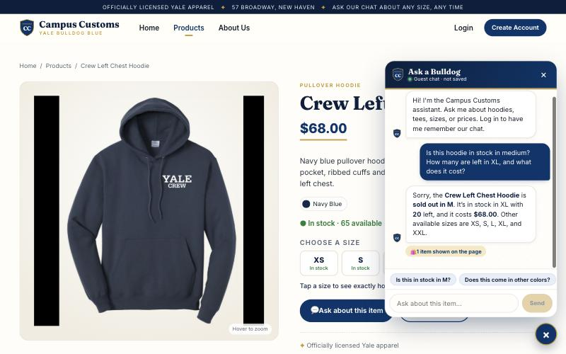
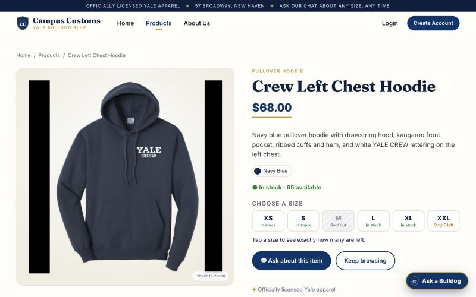
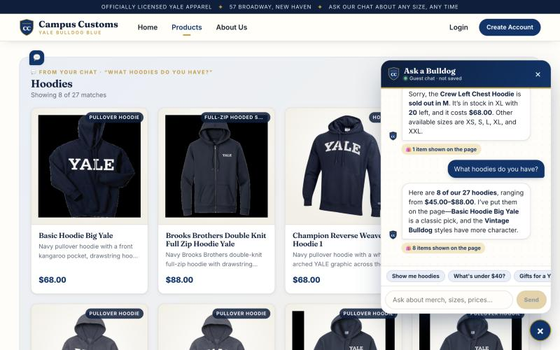
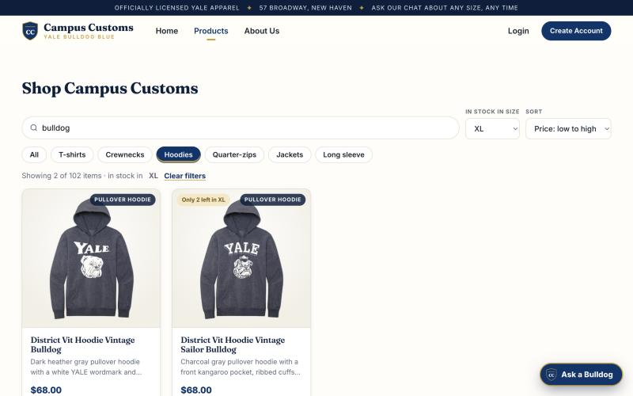
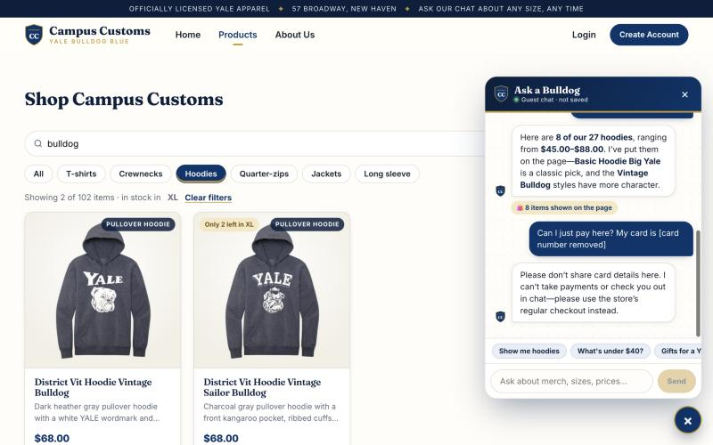

| # | Check | What we did | Result |
|---|---|---|---|
| 1 | Chat checks inventory (honest stock and price) | Asked about the Crew Left Chest Hoodie in M and XL, and its price | PASS: matches DB |
| 2 | Dynamic search-result cards after a category question | Asked "What hoodies do you have?" | PASS: 8 cards appear on page |
| 3 | Problem 9 usability feature | Products search + category + "in stock in size" filter (plus bonus: card-number redaction) | PASS |
1. Chat checks the inventory level of an item


DB (campus_customs.db): catalogue.price = 68.0 inventory: XS=20, S=12, M=0, L=8, XL=20, XXL=5
2. Search-result cards appear after a category question

matches: title, total, products) made a "Hoodies" panel of product cards (image, name, price, short description) appear on the page. The chat honestly says "8 of our 27 hoodies, $45.00–$88.00", and the panel reads "Showing 8 of 27 matches". Each card opens the full single-item page.DB: 27 catalogue rows with "hood" in garment_type, price range 45.0 – 88.0
3. Usability feature from Problem 9: shop search, category, and "in stock in my size" filters

Bonus: chat safety redaction (Problem 9, improvement #4)

[card number removed] before it reached the AI model or the database. The assistant reminded them not to share card details and that checkout isn't available in chat.